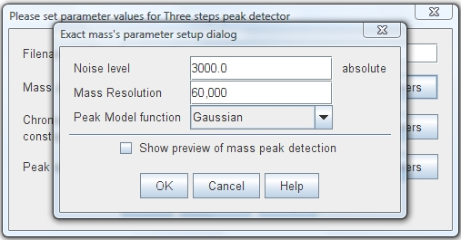

This mass detector search for all local maximum data points in the current spectrum.
After that it sort all of them in descending order. The next step is calculate the
exact mass for each mass spectrum peak and remove lateral peaks, starting with the
biggest intensity data point and so on.
The method to calculate the exact mass is the weighted average using the intensity
of each data point as weight factor. These weightings determine the relative importance
of each data point mass on the average. The data points used in the calculation of
exact mass are considered part of the mass spectrum peak.
| Parameter setup dialog
|
This detector requires the next three parameters:
"Noise level"
This value sets the minimum intensity level that a data point must
have to be consider part of a possible peak.
"Mass resolution"
This value is defined as m/dm where m designates the mass and dm the peak width. A specific
m/z value and the relationship of full width at half maximum (FWHM) is possible to calculate
this value. Mass resolution is usually a large number (up to 10,000 for MS) and is used as
“performance” parameter in many mass spectrometers.
"Peak Model function"
The raw data obtained from a FTMS Mass Spectrometer usually contains
a lot of small shoulder peaks (FTMS shoulder peaks). This data points can be casted aside
of the peak detection process. In order to reach this, a peak model (shape) is used to determine
which of these data points are shoulder peaks and which not.
| Parameter setup dialog  |
Spectrum plot showing detected peaks
|